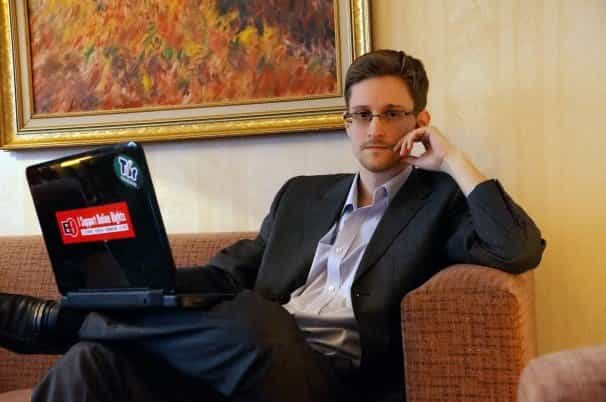
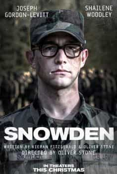
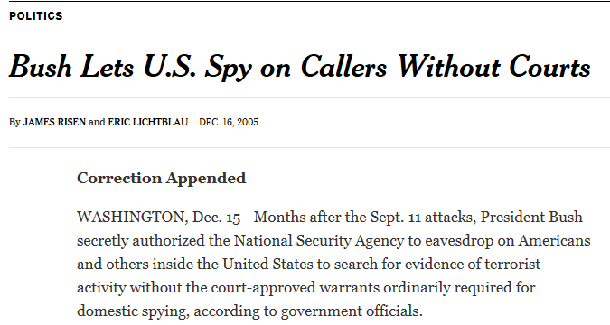
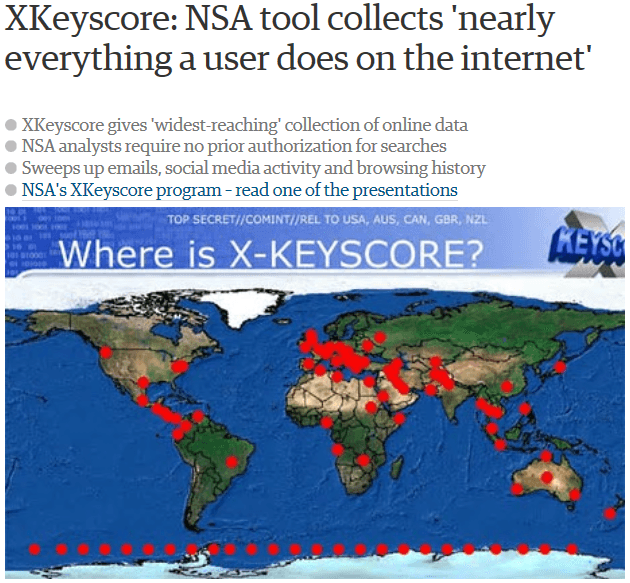
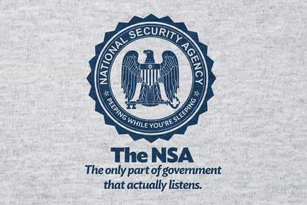
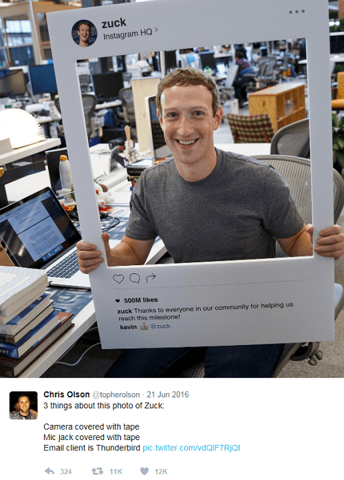
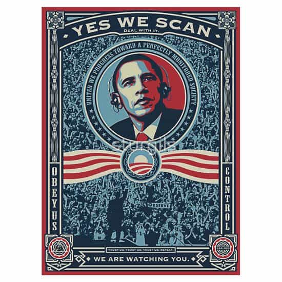
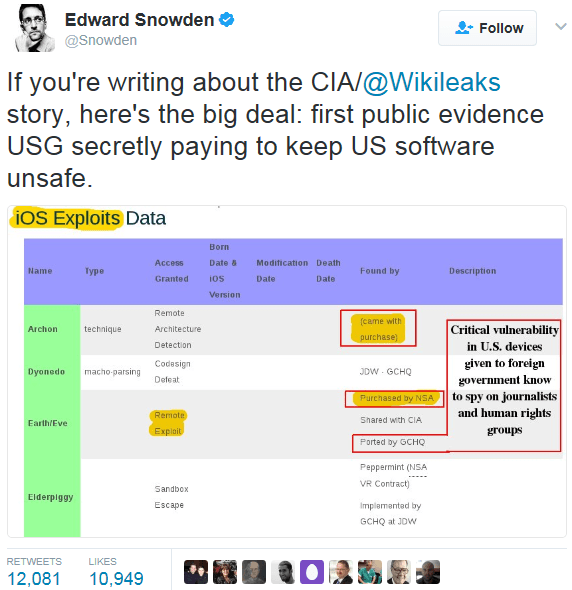

is an aspiring philosopher king, living the dream, travelling the world, hoarding FRNs and ignoring Americunts. He is a European at heart, lover of Latinas, and currently residing in the USA.


Oliver Stone’s bio of Edward Snowden is now available on video. While most people are aware of the vast spy network that Snowden revealed, this film focuses more on the background of the man, his motivations and evolving thoughts.
I found the film hard to watch in a single sitting. Although I was aware of most of the spy activities that Snowden revealed, seeing them compressed in a 2 hour film paints the picture of an oppressive police state that most of us do not want to accept. It’s rather easy, as a white skinned non-Muslim male, to pretend that nothing’s wrong, and that the American government is different from other oppressive, totalitarian regimes around the world, and has good intentions. I had to stop the film half way through and continue a few days later, as it was just too damn depressing.
Snowden taught us that there are no limits to the depravity of the American security state, and although stories like this one still shock me, truly nothing is too deplorable for the deep state.
The film begins with Snowden’s famed meeting with western journalists Glenn Greenwald and Laura Poitras in a Hong Kong hotel June 3, 2013. They place their cell phones in a microwave, to shield their signals, and the 29 year old Snowden begins telling his story, which will soon be revealed to the entire world.

Snowden came from a military family, and in 2004 at age 20, enrolled in the Special Forces and began his basic training. Snowden has a smaller physical frame, and one day his legs collapse as he jumps down from his bunk. He is taken to a doctor and told that he has been running around on broken legs for weeks. He developed small fractures carrying the heavy backpacks in training and he is no longer able to continue training.
In 2006, he joins the CIA. He lacks a high school diploma, although he displays extremely high intelligence. As he’s speaking with one of the training instructors, he tells them he doesn’t drink or smoke. He is asked “What is your sin of choice?” and responds “Computers.” “Well, then, Snowden,” the instructor replies, “you’ve come to the right little whorehouse.”

In an interview he is asked who are his heroes or role models. He responds Joseph Campbell, Star Wars, Henry David Thoreau and Ayn Rand. Clearly, Snowden is a gifted and creative thinker.
Early in training, the cadets are given a programming and hacking test to complete within 8 hours. Snowden finishes in 38 minutes. The instructor can’t believe it. He asks, “What should I do now?” Reply: “Whatever you want!”
Snowden is very much a traditional—my country right or wrong—conservative. He puts almost blind faith in his government and his commander in chief. An early scene shows him walking past a group of war protestors, who he sees as “bashing his country.”
It’s normal for a 20 something to be rather naïve, and Snowden’s experiences over the next several years open his eyes to the truth, and the euphemistic red pill.
Snowden meets his hot stripper girlfriend online. She grew up around the D.C. area and can tell that Snowden is some type of spy, although she doesn’t know exactly where he works or what he does.

During training, Snowden’s instructor discusses a story in the news about the Bush administration being caught illegally wiretapping. The instructor tells the cadets that sometimes we have to issue warrants in secret court proceedings so that “the enemy” is not tipped off.
How quickly the nation changed in a few short decades. This is in sharp contrast to JFK’s famous speech on secrecy in 1961, which he opened stating that
The very word “secrecy” is repugnant in a free and open society. and we are as a people inherently and historically opposed to secret societies, to secret oaths and to secret proceedings. We decided long ago that the dangers of excessive and unwarranted concealment of pertinent facts far outweighed the dangers which are cited to justify it.
Snowden observes government repurposing of programs designed with good intentions for more sinister uses. He befriends a cryptographer who has been sent to the cadet school as punishment. He had developed a $3 million surveillance program that automated monitoring, sorting foreign from domestic signals, encrypting the domestic signals so they were protected, and sorting and monitoring the foreign signals. The government rejects this program, but later purchases a $4 BILLION program modeled after his, (without credit), which has all filters and automation removed, so it simply records everything.
From a public point of view, one could view this as totalitarian, wasteful, and oppressive. From a cryptographer or spy point of view, it was useless. As the man stated “The more you look at, the less you see.” Under the new program, they were drowning in data, and it was useless. At least for security surveillance purposes. If you wanted to “get the goods” on a famous politician, celebrity, business leader, or enemy, or perform corporate espionage, it was incredibly useful. Snowden would later find one of his own programs repurposed for nefarious means.
Snowden asks his lead instructor, Corbin, about this, “Are all of our [signals intelligence] programs specifically targeted?” “Of course,” Corbin responds. “What good would they be if they weren’t?”
Snowden’s first assignment is Geneva, Switzerland in 2007. He is working at a spy facility under the pseudonym Dave when a young hacker kid from the NSA introduces him to a search interface known as X-Keyscore.

X-Keyscore is a search interface for the huge troves of internet data that is collected worldwide. Much of the data comes from the PRISM, an agreement with all major US internet providers to share the data off the internet backbone. PRISM is the #1 source of raw data, with some estimates claiming over 90% of NSA data comes from this program. But wait, isn’t the NSA supposed to spy on foreign bad guys? How could almost all their data be domestic? That’s exactly what Snowden thought.
The Boundless Informant documents revealed that the main target of spying was not China, Russia, or the Middle East, but within the USA and Europe (for reciprocal spy agreements with allied governments).
As the NSA worker explains to Snowden, “Think of X-Keyscore as a google search, except instead of searching only what people make public, we’re also looking at everything they don’t, so, emails, chats, SMS, whatever.” “Yeah, but which people?” asks Snowden. “The whole kingdom, Snow White.”

One of Snowdens first assignments in Switzerland is given at a party where he is instructed to go spy on a banker. Which banker? That doesn’t matter. There’s no specific target, other than running a dragnet to see if anyone with possible illegal action can be found. Snowden, or “Dave” befriends a banker.
XKeyscore allows them to immediately pull up LIVE information on not just this banker, but any of his primary or secondary contacts. Once you are looking at someone’s secondary contacts, you’re talking about somewhere in the neighborhood of 2.5 million people. So let’s say you go to school with a girl whose dad used to work with a man who is now a banker who has committed no crime. One day, you ask her for her number after class. You are now 3 hops from the target, and your emails, chats, phone calls, video chats, and web history can be viewed, and you can be spied on live by activating your phone’s microphone and camera with the click of a mouse.
Snowden is shocked to see that the camera on a laptop, cell phone, or other internet connected device can be remotely activated live, even with the device powered off, to spy on not just the target (who again, is not suspected of any crime) but any of his primary or secondary contacts.

The CIA wants to blackmail the banker, to see if he has any criminal connections. They look into his 15 year old daughter’s Facebook account and pry inter her personal life. They interfere with the boyfriend, who they find is also seeing another girl, and the hysterical teenage daughter takes a bunch of sleeping pills and almost dies. The banker is very upset, and Snowden and his handler encourage him to become highly intoxicated at a bar, and then tell him to drive home, planning to call the police and report him for drunk driving, so they can blackmail him.
Snowden is incredulous. “What the fuck’s going on! What if his daughter had died?” “We could have used that, too,” the handler responds. “In the morning, when he’s facing a week in jail, we’re going to offer him a deal, and he won’t turn it down.” Snowden refuses to go along. “Hey, he’s not driving right now. Look at him! He’ll kill himself. He’s not driving.”
If pressed, I’m sure we could all incriminate a friend or acquaintance for breaking any number of laws. It’s one thing to manipulate and lie to criminals, but to go on a fishing expedition and carelessly destroy others’ lives just because you have power is sociopathic. The next day Snowden resigns from the CIA. He comes home and has sex with his girl, staring at her open laptop with camera lens exposed.
Snowden is becoming more cynical. He is optimistic of the Obama presidency in 2008. He hears campaign promises from candidate Obama promising no more illegal wiretapping of American citizens, mass tracking, or ignoring the law, and is hopeful that things will change. He takes a job in Japan as a NSA/Dell Computers contractor. As Snowden explains:
Because of the money, and because I wanted to live in Japan. And because of Obama, actually. I thought things would get better with him. I was wrong.

His team attempted to convince the Japanese government to help them spy on Japanese citizens. The Japanese were not thrilled, responding that it was against their laws. So the NSA tapped the whole country anyway, and installed sleeper programs into civilian computers at hospitals, power companies, dams, and important infrastructure, with the idea that if one day, the Japanese were no longer allies, they could be sabotaged. The same was done all over the world, in Mexico, Germany, Brazil, Austria.
Soon it became clear to Snowden that the spying wasn’t done for security, or even military reasons. The targets are world leaders, heads of industry, and corporate espionage. As Snowden states,
Ultimately the truth sinks in, that no matter what justification you’re selling yourself, this is not about terrorism . Terrorism is the excuse. This is about economic and social control. and the only thing you’re really protecting is the supremacy of your government.
In 2012, the deputy director of the NSA offers Snowden a job in Hawaii. It’s sold to him as his ticket to the top, with the implication that one day Snowden himself could be running the NSA. He observes a drone attack on a desert building which obliterates a boy standing on a rooftop. He is told that a cell phone on a list is being targeted. He asks how they know that the target is present, just because the phone is, and is given a weak answer. Then he finds out the program behind all this is his “Epic Shelter” backup program he wrote as a cadet, repurposed.
Snowden and a group are watching James Clapper’s infamous unprosecuted perjury before Congress where he claims the NSA does “not wittingly” spy on Americans.
At this point, Snowden decides to go public, contacts journalists, sets up a meeting, and leaves traces in the system so that the government knows it was him, and leaves for Hong Kong.
If you were in my position, living in Hawaii in paradise, making a ton of money, what would it take to make you leave everything behind? The fear I have most is that nothing will change. In the coming months and coming years it will get worse. And then eventually at some point some new leader will be elected who flips the switch, and people won’t be able to do anything at that point to oppose it, and it will be turnkey tyranny.

These guys are the real “Illegals”
Sadly, despite governments of the world retracting from American alliances, shunning American products, and building their own networks, little has changed in America.
The so-called “reforms” of the Obama administration are utterly meaningless. Now it is private multinational communications firms such as Vodafone/Verizon, Deutshe Telekom/T-Mobile, Sprint/Nextel/Virgin who are doing the spying, and providing it upon request to the government. Doesn’t that make you feel so much better? It’s the libertarian fantasy that a bad thing is only bad if government is doing it to you.
And in practice, the same spying can be done under these reforms. The reason is the CIA shares access to its spy databases with several other nations (admittedly at least Australia, Canada, New Zealand, Britain, and Germany). As the US Constitution has evolved from being a list of rules or prohibitions on government action, to a list of “rights” that “citizens” have, a government need only place a request with a foreign entity to spy on its citizens, and then share the results, and this is deemed legal and acceptable.

It is now 100% legal for the NSA to ask, say, British GCHQ, to log on to the NSA’s own XKeyscore database, spy on you, or Donald Trump, or top executives of Apple Computer, or Jennifer Lawrence, and then forward its results back to the American government.
While there are almost weekly protests because Muh Feminism after we elected President Shitlord, nothing was done when the last 2 administrations broke the law and spied on American citizens. And now, it’s become legal to do so.
Snowden’s revelations are at the very least an enormous wakeup call. A huge red pill was shoved down the throats of many, who may now go on to question other false narratives about girls, society, and culture.
Money is a huge motivator. It was money that drew Snowden to the career of spying for 9 years, and it’s largely money that encourages major ISPs and internet companies to spy on their users. The money to the surveillance state must be cut.
Donald Trump has been on the wrong side of the Snowden debate (which should be a debate about freedom and surveillance, not about one man who was a part of said surveillance). While recent news indicates he was spied on for years, Trump is still reluctant to attack the surveillance state. And while he cheers Wikileaks and attacks those who spied on him as “bad and sick,” he has called for the death of Snowden and has done little to dismantle the Deep State. Here’s hoping he will see the truth.
What is gained by “defeating” others at all costs? The schoolyard bully, or corrupt cheater is not the kid I wanted to grow up and be. America used to be the hard working, well-liked, well rounded kid, who may not always earn the top score on every test, may not be the star quarterback, but was still a great friend, a good athlete and team player, and had loyal girlfriend. If nationalism is the future for America, it must first be a nation that its citizens love and support. The conspiratorial side of me wonders if this is all a planned implosion, destroying our values, breaking bonds and allegiances, and removing the moral spine from our culture with the false fear of terrorism. As Kennedy concluded:
Even today, there is little value in opposing the threat of a closed society by imitating its arbitrary restrictions. Even today, there is little value in insuring the survival of our nation if our traditions do not survive with it. And there is very grave danger that an announced need for increased security will be seized upon by those anxious to expand its meaning to the very limits of official censorship and concealment.
Read More: 4 Colossal Lies That Men Have Been Told Since Birth